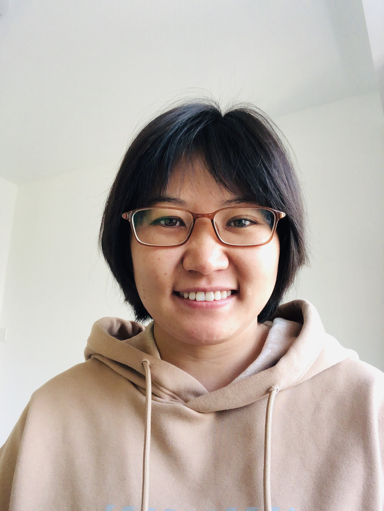

王俊杰，天津大学网络安全学院副教授，研究方向：代码审计，模糊测试。
2019年至今就职于天津大学网络安全学院，职位为副教授。
2018年至2019年就职于奇安信代码安全实验室，职位为漏洞挖掘工程师。
2019年博士毕业于新加坡南洋理工大学计算机学院，导师为刘杨教授。
2014年硕士毕业于天津大学计算机学院，导师为李晓红教授。
2011年本科毕业于天津大学软件学院。
目前课题组有多个研究生/博士名额，欢迎发送简历到 junjie.wang@tju.edu.cn